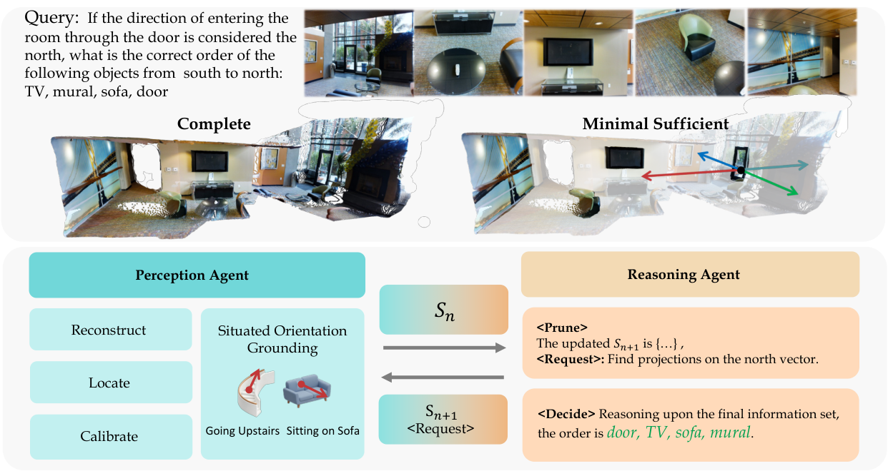
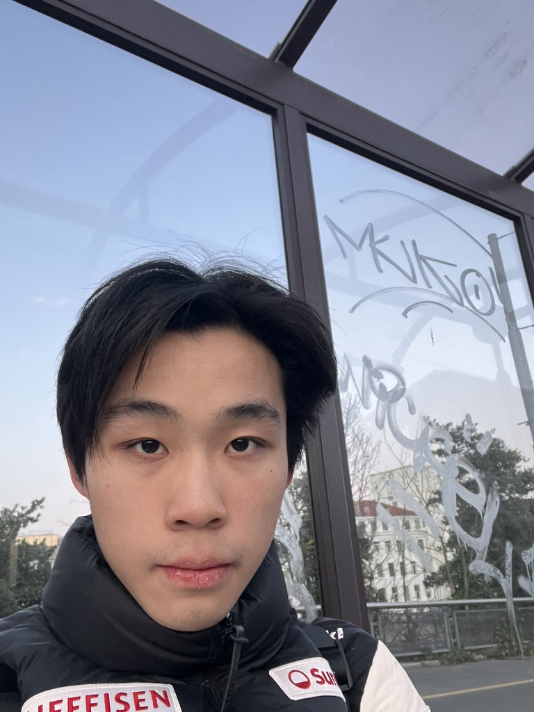
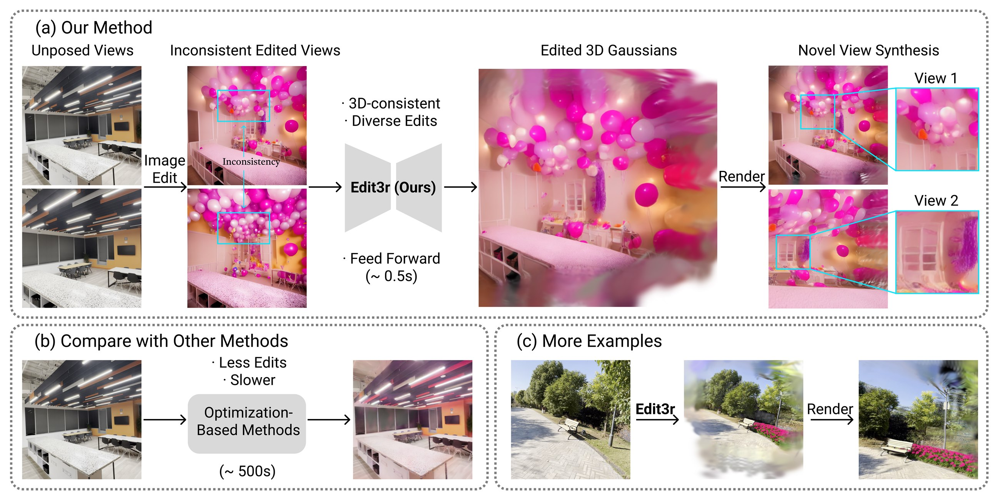
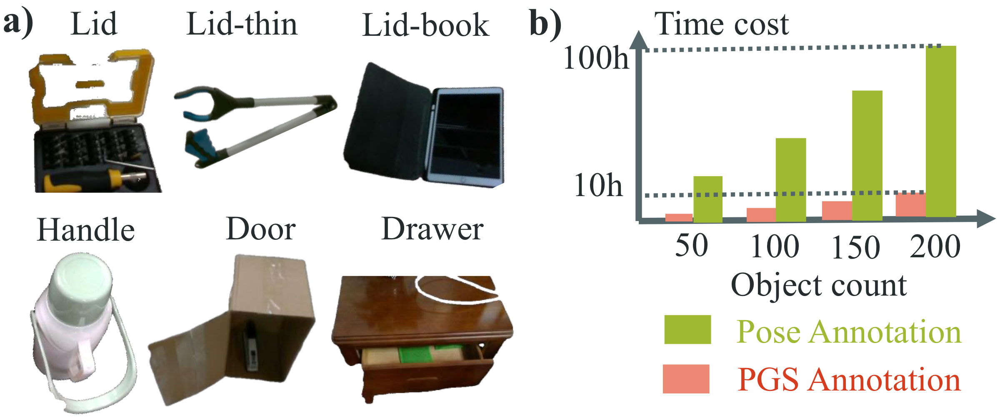
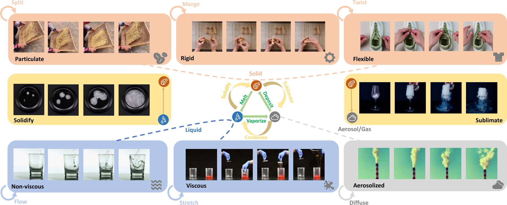

Pursuing Minimal Sufficiency in Spatial Reasoning
ICLR, 2026
A dual-agent framework that extracts and refines minimal sufficient 3D information for spatial reasoning.
Yejie GuoI am a PhD student in Electrical Engineering and Computer Science at the University of California, Merced, advised by Prof. Ming-Hsuan Yang. I received my B.Eng. in Artificial Intelligence (Honor Class) from Shanghai Jiao Tong University in 2026, where I was co-advised by Prof. Yong-Lu Li and Prof. Cewu Lu. During my undergraduate studies, I also spent a semester at EPFL as an exchange student. |
 |
I am interested in large language models, vision-language models, and intelligent agents. My research explores how AI systems perceive and reason about the visual world, with work spanning spatial reasoning, 3D scene editing, and visual perception.

A dual-agent framework that extracts and refines minimal sufficient 3D information for spatial reasoning.

Feed-forward 3D scene editing from sparse unposed images, producing edited 3D Gaussians in a single pass.

A scalable geometric representation and data collection framework for articulated-part perception and robotic manipulation.

A benchmark and reversal-refinement method for segmenting objects through complex phase and appearance transitions.
* Equal contribution.
PhD in EECS · Advisor: Prof. Ming-Hsuan Yang
B.Eng. in Artificial Intelligence (Honor Class)
Semester exchange